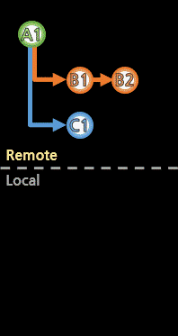
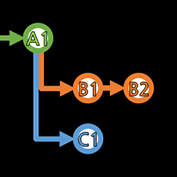

먼저 기본 개념에 대해 짚고 넘어간다.

원격저장소(Remote Repository)가 있고,
이를 복제한 로컬저장소(Local Repository)가 있다.
로컬에서 원격으로 상태를 반영시키는 push(업로드 같은)가 있고,
원격에서 로컬로 상태를 가져오는 fetch(다운로드 같은)가 있다.
(가져와서 로컬에 적용까지 시키는 pull(fetch+merge)도 있지만,
자세한건 사용할 때 보도록 한다.)

브랜치(Branch. 줄기 혹은 가지)가 존재한다.
코드를 추가하거나 제거하는 작업 내용을 커밋(Commit)이라고 한다.
커밋은 이전 상태(커밋)보다 뭐가 추가되고 뭐가 제거되었는지 증감을 기록한 것이지만,
가볍게는 저장소의 상태라고 봐도 좋고,
(커밋으로 상태를 돌리면,
시초부터 해당 커밋까지 특정 브랜치의 흐름에 따라 증감하다가
결국 그 브랜치에서 커밋을 만들었던 그 상태로 복원될 수 있다.)
실제로는 커밋은 작업 내용들을 기록한 것이다.
(그것도 딱 이전보다 뭐가 바뀌었는지만)
마지막으로 약간 모호한 개념의 설명일 수 있는데...
모든 커밋은 하나 이상의 브랜치에서 만들어져 왔기에
커밋이 브랜치에 종속된다고 생각할 수도 있는데,

실제로는 커밋들은 그저 존재할 뿐이고,
브랜치가 커밋들을 자신만의 흐름대로 잇고 있을 뿐이다.
그래서 어떤 커밋들은 여러 브랜치가 공유하고 있다.
맨 처음 시초의 커밋은 브랜치마다 공유하고 있을 것이다.
위의 그림에서도 A1 커밋은 세 브랜치 모두에서 사용하고 있다.
커밋과 브랜치들을 알록달록 표현하는 것에도 한계가 있으니,
표현이 좀 생략되어 있어도 잘 이해해야 한다.